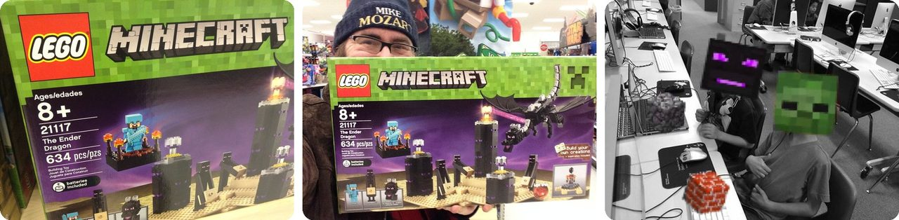
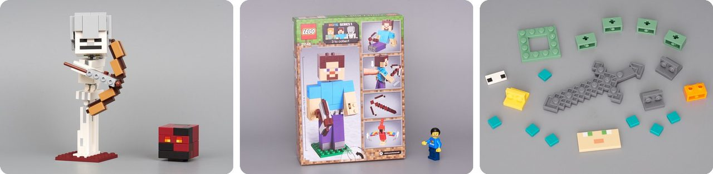

🌍 톱 10 레고 마인크래프트 세트, 몹, 피규어
2026년 11월 21일
1. 🗳️ 레고 마인크래프트는 팬들이 이틀 만에 투표로 만들어 냈어요
 마인크래프트를 만든 회사 모장(Mojang)이 레고의 팬 아이디어 웹사이트에 이 아이디어를 올렸어요. 거기서는 프로젝트가 지지자 1만 명을 모아야 레고가 검토라도 해 줘요. 마인크래프트 팬들은 약 이틀 만에 그걸 해냈어요.
마인크래프트를 만든 회사 모장(Mojang)이 레고의 팬 아이디어 웹사이트에 이 아이디어를 올렸어요. 거기서는 프로젝트가 지지자 1만 명을 모아야 레고가 검토라도 해 줘요. 마인크래프트 팬들은 약 이틀 만에 그걸 해냈어요.
첫 세트인 '마이크로 월드'는 2012년 6월에 나왔어요. 마인크래프트 세계를 네 조각으로 나눈 작은 블록들인데, 아무 순서로나 끼울 수 있고 몇 조각은 들어 올리면 광석과 지하 강이 있는 동굴이 보여요. 아주 작은 캐릭터들은 '마이크로몹'이라고 불러요.
2012년 12월에는 이미 품절이었어요. 그 뒤로 마이크로 월드가 세 개 더 나왔어요. 2013년에 네더와 마을, 2014년에 디 엔드예요.
한마디로, 팬들이 투표로 장난감을 가게 진열대에 올린 거예요.
2. 🧱 레고 마인크래프트 세트는 일부러 평범한 브릭을 써요
 2014년부터 세트는 미니피규어 크기로 바뀌었어요. 게임처럼 네모반듯해 보이려고 대부분 단순하고 평범한 브릭으로 만들어요. 특별히 찍어 낸 부품은 캐릭터 머리, 도구, 몸 일부에만 써요.
2014년부터 세트는 미니피규어 크기로 바뀌었어요. 게임처럼 네모반듯해 보이려고 대부분 단순하고 평범한 브릭으로 만들어요. 특별히 찍어 낸 부품은 캐릭터 머리, 도구, 몸 일부에만 써요.
장면마다 높여 놓은 받침 위에 있어서, 이웃한 세트끼리 붙여 더 큰 세계를 만들 수 있어요. 레고는 지금까지 이 시리즈로 약 177개 세트와 작은 봉지 구성품을 냈어요.
상자 하나하나를 계속 넓혀 가는 세계의 한 조각이라고 생각하면 돼요.
3. 💥 크리퍼는 원래 잘못 만들어진 돼지였어요
 2009년 8월 20일, 마인크래프트를 만든 마르쿠스 '노치' 페르손은 돼지를 만들고 있었어요. 그런데 실수로 길이와 높이를 바꿔 버려서, 키 크고 마른 네 발 달린 이상한 게 나왔어요.
2009년 8월 20일, 마인크래프트를 만든 마르쿠스 '노치' 페르손은 돼지를 만들고 있었어요. 그런데 실수로 길이와 높이를 바꿔 버려서, 키 크고 마른 네 발 달린 이상한 게 나왔어요.
그는 지우지 않고 "으스스한 괴물로 쓰려고 남겨 둘게"라고 했어요. 게임의 나뭇잎 텍스처로 초록색을 입히고 적으로 만들었죠. 이제 크리퍼는 조용히 다가와서 쉬익 소리를 내고 폭발해서, 여러분이 지은 걸 뻥 뚫어 버려요.
레고에서 크리퍼의 몸통과 다리는 대부분 통째로 찍어 낸 부품 하나예요. 그리고 마인크래프트의 수석 디자이너는 플레이어의 건물을 부수는 몬스터라면 요즘이라면 아마 게임에 넣지 않았을 거라고 말했어요.
다시 말해, 오타 하나가 게임에서 가장 유명한 몬스터가 된 거예요.
4. 🐉 엔더 드래곤은 최초의 미니피규어 크기 레고 마인크래프트 세트에 있었어요

2014년 말, 레고는 미니피규어 크기의 첫 마인크래프트 세트 여섯 개를 냈는데, '엔더 드래곤'이 그중 하나였어요.게임에서 드래곤은 디 엔드의 가운데 큰 섬을 지켜요. 디 엔드는 깜깜하고 바닥이 없는 허공 위에 떠 있는 섬들의 세계예요. 드래곤을 물리치면 제작진 이름이 올라가고, 이어서 엔드 포엠이 나와요. 아일랜드 작가 줄리언 고프가 쓴 약 1,500단어짜리 글인데, 다 올라가는 데 9분쯤 걸려요.
대략 다섯 쪽짜리 학교 글쓰기 숙제만큼 길어요.
그러니까 최종 보스를 이긴 상이 잠자리 동화인 셈이에요.
5. 🧑 스티브라는 이름은 농담에서 시작됐어요
 노치는 기본 플레이어 이름을 농담으로 '스티브'라고 지었어요. 너무 평범하게 들리는 이름이라서요. 플레이어들이 그렇게 부르기 시작했고, 나중에 공식 이름이 됐어요. 이 캐릭터는 원래 남자나 여자로 정해 둔 게 아니었고, 2014년 8월에는 알렉스가 두 번째 기본 캐릭터로 들어왔어요.
노치는 기본 플레이어 이름을 농담으로 '스티브'라고 지었어요. 너무 평범하게 들리는 이름이라서요. 플레이어들이 그렇게 부르기 시작했고, 나중에 공식 이름이 됐어요. 이 캐릭터는 원래 남자나 여자로 정해 둔 게 아니었고, 2014년 8월에는 알렉스가 두 번째 기본 캐릭터로 들어왔어요.
그러고 나서 스티브는 엄청 유명해졌어요. 2020년에 대전 게임 '대난투 스매시브라더스 SPECIAL'에 들어갔는데, 너무 강해서 2023년 3월에는 여러 대회에서 금지됐어요. 2025년에는 잭 블랙이 '마인크래프트 무비'에서 스티브를 연기했어요.
임시로 붙인 이름이 슈퍼스타의 이름이 된 거예요.
6. 🗿 레고 마인크래프트 빅피그는 딱 다섯 개만 나왔어요

2019년에 레고는 '빅피그'를 내놨어요. 브릭으로 만든 큰 마인크래프트 캐릭터 피규어로, 미니피규어보다 훨씬 커요. 하나마다 작은 단짝 몹이 같이 들어 있어요.딱 다섯 개예요. 앵무새와 스티브, 닭과 알렉스, 마그마 큐브와 스켈레톤, 오셀롯과 크리퍼, 아기 좀비와 돼지예요. 세 번째 시리즈는 나올 것 같지 않아요.
전체 컬렉션을 한 손으로 다 셀 수 있어요.
7. 🦊 레고 마인크래프트 여우는 2026년에야 자기 머리를 갖게 됐어요
 몇 년 동안 레고는 마인크래프트 여우를 고양이 머리 부품으로 만들었어요. 팬들은 그걸 알아챘고, 기분이 좋지 않았어요. 레고 디자인 매니저 조 카이드는 팀이 그 실망을 알고 있었다고 했어요.
몇 년 동안 레고는 마인크래프트 여우를 고양이 머리 부품으로 만들었어요. 팬들은 그걸 알아챘고, 기분이 좋지 않았어요. 레고 디자인 매니저 조 카이드는 팀이 그 실망을 알고 있었다고 했어요.
그래서 2025년 런던 EGX 게임쇼에서 레고는 완전히 새로운 여우 머리 부품이 들어간 새 세트 여덟 개를 공개했어요. 이 세트들은 2026년 1월 1일에 나왔고, '스티브의 타이가 모험', '닭 농장' 같은 세트에 들어 있어요.
쉽게 말해, 여우가 몇 년 동안 고양이 옷을 입고 있었던 거예요.
8. 👻 히로빈은 한 번도 존재한 적 없는 유명한 마인크래프트 악당이에요
 2010년, 누군가 인터넷에 익명으로 이야기를 올렸어요. 혼자 하는 세계에서 또 다른 스티브를 봤는데, 눈이 온통 하얗고, 안개 속에서 자기를 빤히 보다가 사라졌대요. 그 뒤로 그 일에 대해 쓴 글이 자꾸 지워졌다고 했어요.
2010년, 누군가 인터넷에 익명으로 이야기를 올렸어요. 혼자 하는 세계에서 또 다른 스티브를 봤는데, 눈이 온통 하얗고, 안개 속에서 자기를 빤히 보다가 사라졌대요. 그 뒤로 그 일에 대해 쓴 글이 자꾸 지워졌다고 했어요.
진짜가 아니었지만 소문은 퍼졌어요. 스트리머들이 자기 버전을 만들고, 팬들이 이야기를 쓰고 히로빈을 넣는 모드까지 만들었어요. 심지어 기네스 세계 기록의 '최고의 비디오 게임 악당' 투표에도 올랐어요.
캠프파이어에서 듣는 귀신 이야기가 기록책에 오른 거예요.
9. 🐔 "치킨 자키!" 한마디에 영화관이 난리가 났어요
 '마인크래프트 무비'(2025)에서 마인크래프트 몹이 나타나자 스티브가 "치킨 자키!"라고 외쳐요. 미국과 영국의 십대 관객들은 딱 그 순간에 환호하고, 펄쩍 뛰고, 춤추고, 팝콘을 던지기 시작했어요.
'마인크래프트 무비'(2025)에서 마인크래프트 몹이 나타나자 스티브가 "치킨 자키!"라고 외쳐요. 미국과 영국의 십대 관객들은 딱 그 순간에 환호하고, 펄쩍 뛰고, 춤추고, 팝콘을 던지기 시작했어요.
점점 더 심해졌어요. 유타주 프로보의 한 영화관에서는 관객들이 살아 있는 닭을 들어 올렸다가 쫓겨났어요. 어떤 영화관은 시끄럽게 굴지 말라는 경고문을 붙였어요.
그러자 워너 브라더스는 아예 이 흐름을 탔어요. 2025년 5월 2일에 팬들이 같이 노래하고 소리 지르도록 초대하는 '블록 파티 에디션'을 내놨어요. 이 영화는 전 세계에서 약 9억 6,100만 달러를 벌었어요.
조용한 영화관을 축구 경기장으로 바꿔 놓은 거예요.
10. 🦔 팬들이 마인크래프트 몹 투표를 없애려 했지만 아르마딜로가 이겼어요
 마인크래프트의 '몹 투표'는 플레이어가 새 생물 세 개 중 하나를 골라 게임에 넣는 행사였어요. 2023년 후보는 게, 펭귄, 아르마딜로였어요.
마인크래프트의 '몹 투표'는 플레이어가 새 생물 세 개 중 하나를 골라 게임에 넣는 행사였어요. 2023년 후보는 게, 펭귄, 아르마딜로였어요.
많은 플레이어가 셋 다 원했어요. 모장에게 투표를 없애 달라는 청원은 일주일 만에 약 44만 5천 명의 서명을 받았어요. 미국 마이애미시 인구와 비슷한 숫자예요. 팬들은 농담 섞인 '혁명' 포스터까지 만들었어요.
그래도 투표는 그대로 열렸고, 아르마딜로가 이겼어요. 2024년 9월, 모장은 몹 투표를 완전히 끝냈어요.
반장 선거에서 모두가 후보 세 명 다 뽑히게 해 달라고 한 셈이에요.
재미있는 사실
크리퍼의 유명한 쉬익 소리는 원래 남겨 둘 생각이 없던 소리였어요. 마인크래프트 작곡가 다니엘 로젠펠트(C418)가 노치와 함께 성냥 소리로 임시 효과음을 만들었는데, "웃길 만큼 잘 어울려서" 그대로 남았대요. 다른 소리도 이렇게 이것저것 해 보며 만들었어요. 진짜 풀밭을 걷는 소리는 어색해서 낡은 비디오테이프를 살짝 만지는 소리를 썼고, 거미 비명은 소방 호스 녹음을 아주 높은 음으로 바꾼 거예요. 효과음 아티스트들에게는 이런 비법이 한가득 있어요.
사진 출처 (Wikimedia Commons)
- #1: Minecraft Lego (flickr) by JeepersMedia, CC BY 2.0
- #1: Minecraft (flickr) by nefasth, CC BY-SA 2.0
- #1: Minecraft Lego (flickr) by JeepersMedia, CC BY 2.0
- #2: LEGO Minecraft set 21141 The zombie cave (flickr) by Alex does LEGO, CC0
- #2: Minecraft Lego (flickr) by JeepersMedia, CC BY 2.0
- #2: Diorama Minecraft en Lego (Colmar).jpg by Gzen92, CC BY-SA 4.0
- #3: lego creeper (flickr) by paulhome, CC BY 2.0
- #3: Minecraft Creeper Piñata (flickr) by taylor.a, CC BY 2.0
- #3: #minecraft creeper cakes for my boy's class. These are probably the worst looking cakes I've ever made, but they took so much work! (flickr) by mommyknows { Kim Becker }, CC BY 2.0
- #4: Minecraft Lego (flickr) by JeepersMedia, CC BY 2.0
- #4: Minecraft Lego (flickr) by JeepersMedia, CC BY 2.0
- #4: Zombie and Ender Dragon boys! (flickr) by mole555, CC BY 2.0
- #5: Minecraft Lego head (6790028921).jpg by Dennis Bohman from Boxholm, Sweden, CC BY 2.0
- #5: Minecraft Steve, Sandy Carnival, Sandy, Bedfordshire (flickr) by orangeaurochs, CC BY 2.0
- #5: Minecraft Steve (flickr) by colecamp, CC BY 2.0
- #6: Minecraft-Bigfigs-2019P1070601 (flickr) by Brickset, CC BY 2.0
- #6: Minecraft-Bigfigs-2019P1070469 (flickr) by Brickset, CC BY 2.0
- #6: Minecraft-Bigfigs-2019P1070488 (flickr) by Brickset, CC BY 2.0
- #7: Vulpes vulpes · Volgograd, RU by (c) Алина Урусова, some rights reserved (CC BY), CC BY
- #7: Vulpes vulpes necator · Deschutes County, US-OR, US by (c) David Willingham, some rights reserved (CC BY), CC BY
- #7: Vulpes lagopus · thule greenland by (c) Drew Avery, some rights reserved (CC BY), CC BY
- #8: Herobrine (Minecraft).png by OxyLight, CC BY 4.0
- #8: herobrine (flickr) by vegetta777 gaymer pro, CC BY-SA 2.0
- #8: Steve? 2.png by Xbox México, CC BY 3.0
- #9: Minecraft movie disruptive behavior warning.jpg by Chicken4War, CC BY-SA 4.0
- #9: Movie Ticket for A Minecraft Movie (2025).jpg by PublicDomainFan08, CC0
- #9: A Minecraft Movie McDonald's meal.jpg by YosemiteYamper, CC BY-SA 4.0
- #10: Nine-banded armadillo (13594).jpg by Rhododendrites, CC BY-SA 4.0
- #10: Dasypus novemcinctus · Recanto de Itaipuaçu, Maricá - RJ, Brasil by (c) Pedro Silva, some rights reserved (CC BY), CC BY
- #10: Six-banded armadillo (Euphractus sexcinctus).JPG by Charles J. Sharp, CC BY-SA 4.0
.jpg){kind=link}
.jpg){kind=link}
.png){kind=link}


.jpg){kind=link}

.jpg){kind=link}
.JPG){kind=link}